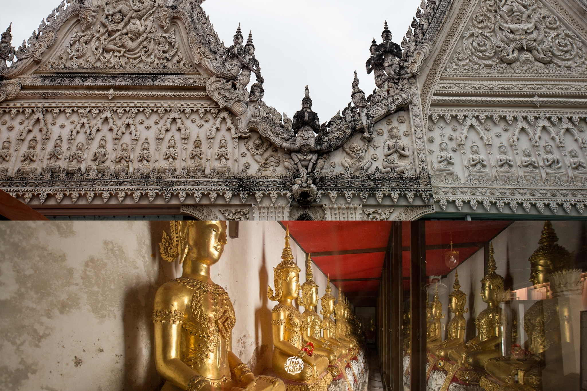

อ่านเพิ่มเติม
6 Unseen แลนมาร์คในเมืองเก่าริมน้ำ
เที่ยว กิน เล่น ครบ ใครจะไปรู้ว่าจุดเช็คอินสุดว๊าวว จะซ่อนอยู่ในชุมชนแบบนี้...
อ่านเพิ่มเติม

Angkor Wat: นครวัด ที่ทั้งเหมือน และไม่เหมือนกับที่คิด
ลมหนาวมาเมื่อไร ใจฉันมันสุดเหงา หนาวนี้รีบหาคู่แล้วพากันขึ้นภูไปดูทะเลหมอกกัน ...
อ่านเพิ่มเติม
เช็คอิน 10 ที่เที่ยวทะเลหมอก
เที่ยว กิน เล่น ครบ ใครจะไปรู้ว่าจุดเช็คอินสุดว๊าวว จะซ่อนอยู่ในชุมชนแบบนี้...
อ่านเพิ่มเติม